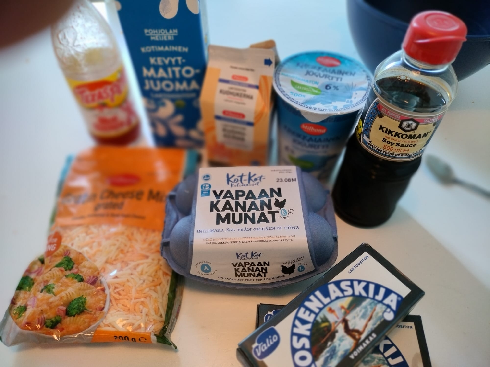
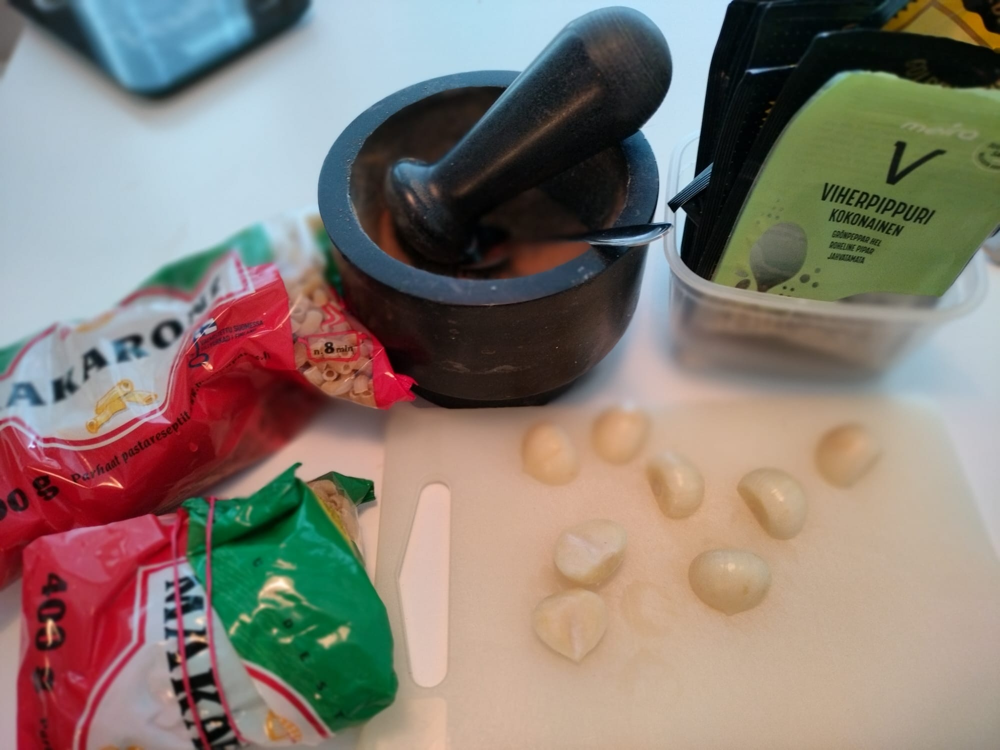
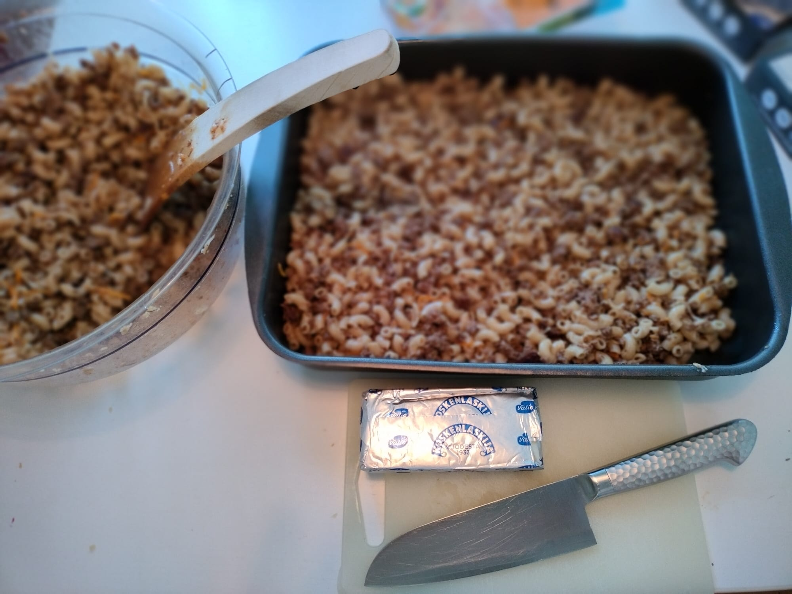
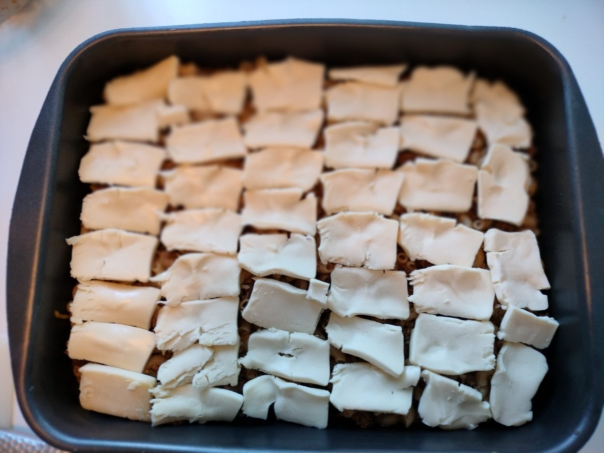
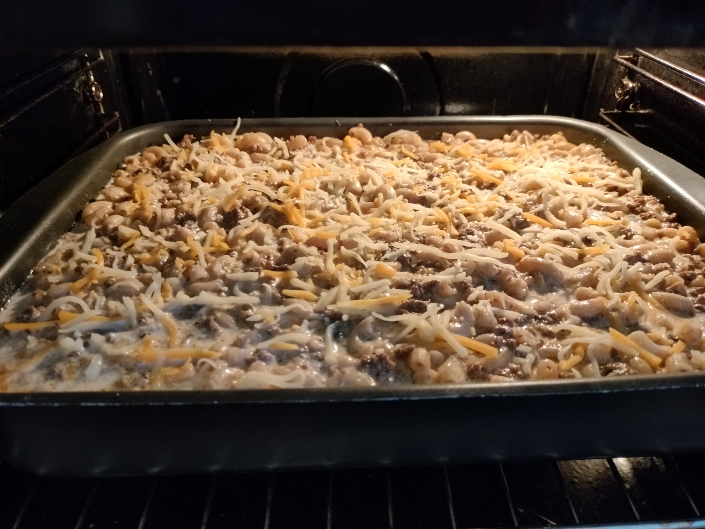
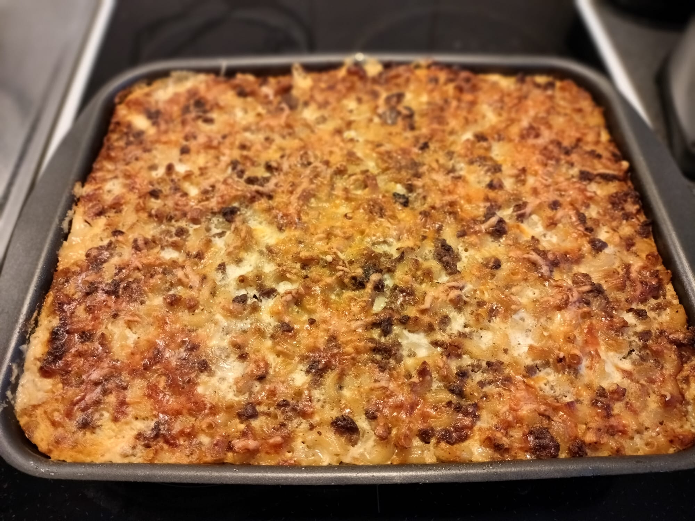

Etusivu
Reseptit
FAQs
Koskenlaskija makaronilaatikko
Ainekset
Yleiset

1,5 pussia (600g) makaronia
2 pkt Musta Koskenlaskija
1 pussi Gratin Cheese Mix (Milbona)
Liha

1 kg jauhelihaa
1 kg jauhelihaa
Mausteseos morttelissa
valkopippuri
viherpippuri
mustapippuri
rakuuna
rosmariini
timjami
savupaprika
chilihiutale
merisuola
TexasPete
tuore persilja
soijakastike
(Ei sipulia koska lapset eivät suotu syömään, mutta mikäli ei moisia rajoitteita ole niin mukaan ehdottomasti)
Munamaito
4 munaa
1 l kevytmaito tai lihaliemi
500g Kreikkalainen jogurtti
1 dl kerma
1.5 dl vesi
TexasPete
loput mausteseoksesta
Ohjeet
Aseta uuni 200 asteeseen ja rouhi mausteseos.
Paista jauheliha 4 erässä ja lisää mausteseos & valkosipulit.
Kun kaikki paistettu lisää persilja, soija ja TexasPete.

Sekoita jauheliha, makaroni & 2/3 pussia juustoraastetta ja levitä puolet seoksesta voideltuun uunivuokaan.

Leikkaa koskenlaskija siivuiksi ja levitä kerros vuokaan.
Tee munamaito / lihaliemi ja kaada vuokaan.
Ripottele päälle loput juustoraasteet

Paista 1 tunti uunissa keskitasolla 200 °C

Nauti!